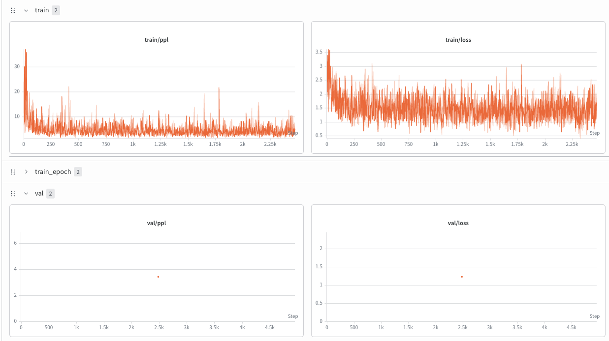

Pretrained Llama-3.2-1B (HF, bf16, MPS) → instruction-follower · Tulu-3 SFT mixture · ~1 hr on a Mac
| Base model | pretrained meta-llama/Llama-3.2-1B (HF), bf16, on Apple MPS. Chat template borrowed from the -Instruct variant (base ships none) |
|---|---|
| Data | Tulu-3 SFT mixture — filtered to short (≤256-token) complete conversations, capped at ~20K examples for a tractable Mac run |
| Objective | cross-entropy on the response tokens only (prompt + padding masked to -100) |
| Run | 1 epoch ≈ 2,475 steps · batch 8 · seq 256 · static padding (no MPS allocator fragmentation) · AdamW lr 2e-5, cosine + ~3% warmup · grad-clip 1.0 |
| Eval | val loss / perplexity + peek-generation on fixed prompts (the qualitative signal) |
The same fixed prompts, sampled across training. The base model can't parse the chat format at all; by the end of one epoch it answers on-task.
Instruction-following emerges within the first ~200 steps, then sharpens into clean answers with clean stops:
| Step | "What is the capital of France?" | What it shows |
|---|---|---|
| 0 | iteDatabaseBeginInitdropIfExists… | base model, no chat format → gibberish |
| 200 | Paris / The capital of France is Paris. | instruction-following clicks |
| 1000 | correct but rambles on (no stop) | knows the answer, over-generates |
| 1200 | Paris is the capital of France. | clean answer + clean stop |
| 2400 | Paris is the capital of France. | stable |
Peek 2 went from an ML explanation (wrong topic!) at step 200 → real ocean haikus by step 1800–2400 — the model learned both the format and the task over the hour.
Final numbers (verbatim): train (epoch avg) 1.49 / ppl 4.44, val 1.23 / ppl 3.43 — full epoch of 2,475 steps in 62 min on MPS (~1.50 s/it, no OOM, static padding held). Val sitting below the train average is healthy: train loss is averaged over the whole epoch (including the high-loss early steps) while val is measured at the end with the improved model — not overfitting.
The loss barely moves over the run. That's expected: the base model is already a strong language model, so SFT isn't teaching it language — it's installing the chat format + "answer the instruction" behavior. That change is nearly invisible in the loss curve and obvious in the peeks. This is why peek-generation, not the loss, is the success signal for SFT.
Remaining rough edges (all expected after 1 epoch): inconsistent stopping — Peek 1
sometimes runs to max_new_tokens=50 and drifts into unrelated text (the model hasn't reliably
learned to emit <|eot_id|> after short answers yet); occasional topic drift. Exactly the kind of
behavior preference/RL alignment in the next stage is meant to clean up.

giddy-shape-6, project llm-from-scratch-pretrainer.checkpoints/sft/checkpoint_epoch0.pt — the starting policy for the RLHF phase.Summary lives in OVERVIEW.md §3. Live curves: Weights & Biases — run giddy-shape-6 (project llm-from-scratch-pretrainer).